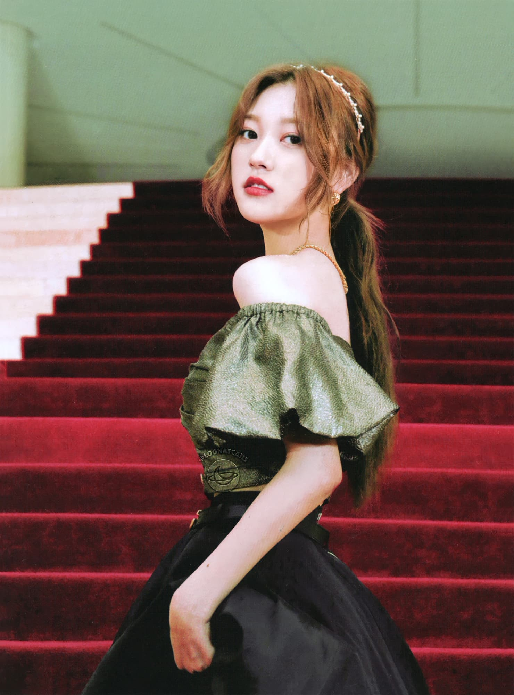

Choerry is the eighth member of Loona. She debuted on July 12, 2017 as a member, and released her solo single album "Choerry" on July 28, 2017.
On July 4, 2017, the eighth “Who’s Next Girl?” teaser was released, and Choerry was revealed as the eighth member on July 12. She released her solo single album Choerry on July 28, and subsequently debuted as a member of LOONA.
On August 29, 2017, Choerry was revealed as the maknae of LOONA’s second sub-unit, ODD EYE CIRCLE.
| Choerry | |
|---|---|
|  | |
| Full Name | Choi Ye-Rim (최예림) |
| Birthday | June 4, 2001 (19) |
| Month | July |
| Color | Purple |
| Animal | Fruit Bat |
| Sub-Unit | Odd Eye Circle |
| Shape | Circle |
| Zodiac Sign | Taurus |
| Blood Type | O |
Choerry appeared on a 2009 episode of Happy Time, Fantastic Mates (환상의 짝꿍) when she was seven years old, and performed a dance cover of Son Dam-bi’s “Saturday Night.”
Choerry was initially cast after participating in a vocal contest. She later passed her audition for Polaris/BlockBerry Creative and became a trainee at the same time as fellow members HaSeul and YeoJin, either late 2015 or early 2016. Choerry and HaSeul lived near each other and would commute to Polaris-BlockBerry together as trainees.
In Love Cherry Motion, she has a cute and bubbly personality, with dark girl-crush peaks. This shows the drastic difference between white and purple. Bats are also well known to be the only mammal to be truelly able to fly and are sometimes misclassified as bird. This ambivalence was portrayed in the fable of Aesop "The Bat and The Weasels".
Her power is referred as "Dimentional Travel" by BlockBerryCreative. It is theorized that this means that she can visit the 1/3 world or the yyxy world as she pleases, which makes sense since she is seen throughout the LOONA music videos, in Kiss Later and in One&Only. It's also important to recognize that Choerry has two official colors, purple and white, just like JinSoul.